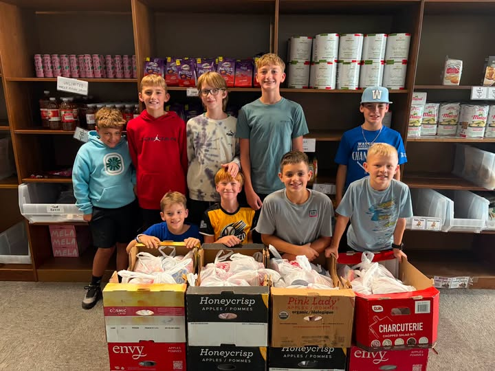
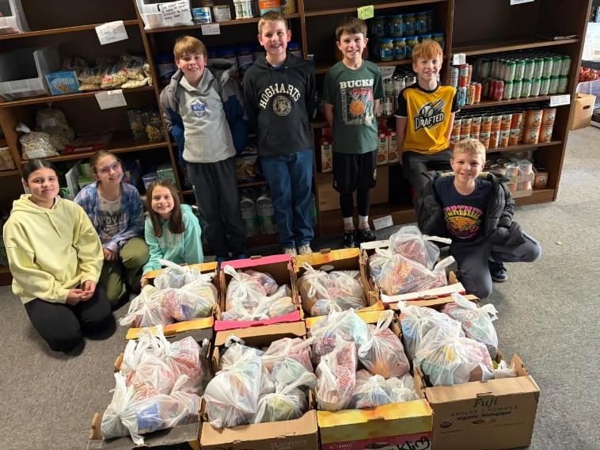

Snack Packs Are Back
Snack packs are back for the school year, and our first packing teams have already helped get bags ready for students at Schurz Elementary School. Local young men and young ladies came in, worked together, and helped pack snacks for 70 students — turning a needed community effort into a fun, fast-paced volunteer opportunity.
These snack bags go home each week with children who may be at risk for food insecurity. A simple snack can help bridge the gap between school meals and support students’ attendance, performance, and daily well-being. Each bag also includes two pieces of fresh fruit.
To keep the bags full, we need continued support from the community. You can purchase needed items from our Amazon wishlist, sponsor a week or month of snack bags, or contact us about sponsoring a week’s worth of fresh fruit. Cereal cups are also a great item to donate when available.

Weekend Meal Program
Launched as a pilot program at the beginning of this school year, our Weekend Meal Program helps provide children with food to take home over the weekend. The response has been deeply encouraging. We have received heartfelt gratitude from the children receiving these meals, and again and again they share how thankful they are for the fresh fruit. We also value that the lunches are easy enough for children to prepare for themselves, making the program both practical and empowering.
One especially meaningful part of this program is our Weekly Warriors, the children who help pack food for other children. Their involvement creates a wonderful opportunity for young people to volunteer, serve their community, and learn the value of compassion in action.
As the need continues, so does our commitment to this program. With continued donations and community support, we hope to expand the Weekend Meal Program and reach even more children in the future.